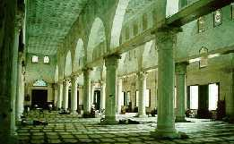

Au nom d’Allah le Clément, le Miséricordieux, Louanges à Allah.
Qui a construit l'Aqsa?

Première - Deuxième - Troisième - Quatrième partie
Qadi Cheik Jabal Libnan Mustapha Chahde
Radio du saint coran
On s’est arrêté la dernière fois à 4 incidents, à propos de l’ouverture de Bayt al Maqdis par Omar Ibn Khattab  :
:
1 Comment l’a-t-il ouvert ?
2 A-t-il visité le Masjid Aqsa ?
3 Est-ce qu’il a pu entrer alors qu’il y avait plein de déchets ?
4 Comment a-t-il traité avec les prêtres de Bayt Al Maqdis ?
Bismillah ir-Rahman ir-Raheem was-salaat was-salaam `ala Nabiyyina wa Habeebina wa Mawlana Mohammadin wa `ala alihi wa sahibihi ajma`een
Ô Allah apprends nous ce qui nous sera profitable et fais nous profiter de ce que tu nous as appris et augmente nos connaissances et nos bonnes œuvres.
J’invoque Allah afin qu’Il nous prenne sous Sa tutelle, Sa miséricorde, Sa générosité, et qu’Il fasse de nous Ses serviteurs et rapprochés, Allah est Doux, Bon, Connaisseur sur Ses serviteurs. Dieu épargne nous la maladie, les catastrophes, les mauvaises personnes et accorde nous ton agrément.
On est arrivé à Fath Bayt Al Maqdis donc quand Omar  a décidé d’aller là-bas. Il est parti accompagné des grands compagnons et Obeyd ben Jarar
a décidé d’aller là-bas. Il est parti accompagné des grands compagnons et Obeyd ben Jarar  est sorti de Cham pour le rencontrer. Omar est arrivé à Ilya sur son chameau, il est descendu, il a pris son chameau par ses reines et cela par humilité alors qu’il est Amir al Oumma. Il a traversé un point d’eau pour aller jusqu’à Obeyd qui l’attendait avec des nouveaux habits blancs et un grand cheval (birzoun) pour aller à la rencontre des patriarches.
est sorti de Cham pour le rencontrer. Omar est arrivé à Ilya sur son chameau, il est descendu, il a pris son chameau par ses reines et cela par humilité alors qu’il est Amir al Oumma. Il a traversé un point d’eau pour aller jusqu’à Obeyd qui l’attendait avec des nouveaux habits blancs et un grand cheval (birzoun) pour aller à la rencontre des patriarches.
On lui a demandé de porter ces nouveaux vêtements parce que c’est plus joli et que l’animal est plus facile à monter, et ils ne voulaient pas que les patriarches voient Omar avec ses habits de voyage. Omar  est monté sur l’animal, mais il n’a pas prie les habits. Cependant, Omar l’a trouvé tellement reposant et inhabituel, qu’il n’en a pas voulu, et il a dit : « J’ai peur que mon cœur se détourne (d’être pris par ce luxe) ».
est monté sur l’animal, mais il n’a pas prie les habits. Cependant, Omar l’a trouvé tellement reposant et inhabituel, qu’il n’en a pas voulu, et il a dit : « J’ai peur que mon cœur se détourne (d’être pris par ce luxe) ».
On raconte qu’il s’est rappelé du Hadith du prophète,  qui dit : « N’entrera pas au paradis même celui qui a une goutte d’orgueil. » Omar
qui dit : « N’entrera pas au paradis même celui qui a une goutte d’orgueil. » Omar  a dit : « Prenez le, prenez le (l’animal) !» Et il a demandé son chameau.
a dit : « Prenez le, prenez le (l’animal) !» Et il a demandé son chameau.
Alors on lui a dit : « Alors prends au moins les habits ! »
Mais, il ne voulu pas après toutes ces victoires. C’est pourquoi il a répondu :
« Ne soyez pas fier d’autre chose que de ce que Dieu vous a donné pour être fier (l’islam) sinon vous serez humilié. »
Il a donc refusé tout cela. Il s’est installé et les chrétiens ne l’ont pas reconnu avec son chameau. Alors il a dit : « Par Dieu, je ne changerai pas mon look que j’ai depuis que je me suis séparé de mes deux compagnons » (le prophète,  et Abû Bakr)
et Abû Bakr)
Quand il est arrivé les gens étaient tranquilles et il a envoyé Obeyd aux habitants d’Ilya pour qu’ils sortent rencontrer Amir Al Mouminin.
Mais, ils ne l’ont pas reconnu et on raconte que quand on a présenté Omar aux patriarches, ils n’ont pas cru que c’était lui. Cependant, quand ils ont vu Omar, ils ont su de quelles manières ils ont pu gagner les guerres, car les autres rois s’habillaient avec de l’or et des bijoux.
Ils sont venus le rencontrer, l’habitude était : soit ils font la guerre aux musulmans, soit ils signent un pacte de paix avec eux. Omar est entré avec humilité à Ilya et il voulait que les habitants soient tranquilles et qu’ils comprennent que les musulmans n’étaient pas là pour casser, ou tuer, pour cela donc ils sont rentrés, 4000 musulmans, tous à pied.
Qu’est ce qui a été écris dans ce pacte ? Pour que nous nous rendions compte quelle est la qualité d’Omar et de notre religion, car aujourd’hui, on n’est pas bien avec notre religion parce que l’on ne l’a pas comprise.
Omar  leur a donner la garantie de ne rien faire par rapport à ce qui c’est passé avant, tout est oublié à condition de ne plus rien faire de mal après :
leur a donner la garantie de ne rien faire par rapport à ce qui c’est passé avant, tout est oublié à condition de ne plus rien faire de mal après :
Et Omar  le leur a accordé, cet accord était pour Iliya, mais aussi partout où les musulmans gouvernaient.
le leur a accordé, cet accord était pour Iliya, mais aussi partout où les musulmans gouvernaient.
Et ont témoigné de ce pacte, Khalid ben al wali, Omar ben al Ass, Abdel Rahman ben Awf. Mohawiya ben Ali Soufiyan, en l’an 15 de l’hégire.
Après avoir signé le pacte, Omar  a demandé aux patriarches de le guider dans le temple de David ou suivant une version à masjid Souleyman ibn Dawud.
a demandé aux patriarches de le guider dans le temple de David ou suivant une version à masjid Souleyman ibn Dawud.
Le patriarche fut d’accord, mais il voulu le tester, pour voir si l’islam est une vraie religion parce que le patriarche savait que le prophète,  avait fait l’isra, aussi il voulait savoir si Omar va reconnaître Bayt al maqdis c’est pourquoi le patriarche a guidé Omar autre part, pas à la mosquée, mais à l’église.
avait fait l’isra, aussi il voulait savoir si Omar va reconnaître Bayt al maqdis c’est pourquoi le patriarche a guidé Omar autre part, pas à la mosquée, mais à l’église.
Et, Omar marchait devant son armée, le patriarche les a emmenés à l’église de la Résurrection. Et il leur a dit : « cela est le masjid Dawud ». Omar a regardé et il lui a dit : « tu n’as pas dit vrai », le prophète,  m’a décrit Masjid Dawud et cela ne s’applique pas à celui-là. »
m’a décrit Masjid Dawud et cela ne s’applique pas à celui-là. »
Alors le patriarche fut étonné, car Omar n’avait jamais vu Masjid Dawud. Il les a emmenés dans une autre église qui s’appelle l’Eglise de Sayun. Alors Omar  a regardé et il lui a dit : « Tu n’as pas dit vrai ». Alors il les a emmené à Masjid Maqdis par la porte de Mohammed et la poubelle arrivait jusqu’à la porte. La poubelle allait jusqu'au plafond. Ils avaient du mal à entrer, alors le patriarche lui a dit : « Tu ne pourras pas rentrer sauf à quatre pattes », alors Omar a dit : « Même à quatre pattes j’entrerai » Alors tout le monde s’est mis à quatre pattes jusqu’à arriver au rocher. Quand Omar
a regardé et il lui a dit : « Tu n’as pas dit vrai ». Alors il les a emmené à Masjid Maqdis par la porte de Mohammed et la poubelle arrivait jusqu’à la porte. La poubelle allait jusqu'au plafond. Ils avaient du mal à entrer, alors le patriarche lui a dit : « Tu ne pourras pas rentrer sauf à quatre pattes », alors Omar a dit : « Même à quatre pattes j’entrerai » Alors tout le monde s’est mis à quatre pattes jusqu’à arriver au rocher. Quand Omar  est arrivé il a dit : « Par celui qui tient mon âme dans sa main, c’est ce que le prophète,
est arrivé il a dit : « Par celui qui tient mon âme dans sa main, c’est ce que le prophète,  m’a décrit. » Il a ordonné de nettoyer le rocher et il a ordonné en attendant un autre endroit pour prier. Et c’est ce que l’on appelle masdjid Omar.
m’a décrit. » Il a ordonné de nettoyer le rocher et il a ordonné en attendant un autre endroit pour prier. Et c’est ce que l’on appelle masdjid Omar.
Dans un autre livre : Omar est entré il a regardé à droite et à gauche et a dit :
« c’est cela. » Puis il a cherché un endroit plus propre et a dit que c’est là qu’ils vont prier.
Suivant une autre histoire : il s’est mis dans un endroit de façon à ce que la Mecque et l’Aqsa soient alignés et c’est là que se trouve sa mosquée. C’est ce que le prophète,  avait fait pendant l’isra et il a ordonné qu’on nettoie partout pour adorer Dieu comme il se doit.
avait fait pendant l’isra et il a ordonné qu’on nettoie partout pour adorer Dieu comme il se doit.
Ils se sont installés plusieurs jours, ils se sont reposés, le temps pour Omar de remettre son armée en état. Les gens de l’Irak lui ont demandé de venir passer chez eux le rencontrer. Il y a des histoires qui disent qu’on lui a dit de ne pas y aller.
Et Omar s’est donc installé et comme à son habitude, a visité les chefs de ses armées et il était connu qu’il n’allait que si il se faisait inviter par ses responsables. Il demandait à ses chefs pour qu’ils l’invitent tout simplement pour voir s’ils n’avaient besoin de rien. Il a ainsi visité tout le monde sauf Obeyd et il lui a dit : « Tous les chefs m’ont invité sauf toi. »
Alors Obeyd a dit : « Si je t’invite j’ai peur que tu pleures sur mon sort. » Omar a insisté alors Obeyd l’a invité. Omar n’a trouvé chez lui que la selle de son cheval pour s’asseoir et dormir. Alors Obeyd fut gêné car il n’avait rien à offrir à son hôte. Il n’y avait que des bouts de pain durs alors il a servi du pain dur et de l’eau. Alors Omar a pleuré et l’a pris dans ses bras. Omar a dit à Obeyd : « Tu es mon frère et il n’y a aucun compagnon qui n’ait pas eu quelque chose dans sa vie sauf toi. » Obeyd lui dit : « Ne t’avais-je pas prévenu de cela. (Que tu allais pleurer)»
Omar avait des lois, il ne fallait pas qu’un chef dépasse un certain niveau de vie, les chefs ne devaient pas avoir de porte chez eux, car la porte veut dire demander la permission. Une fois, Omar a su que tel chef avait mis une porte à cause des bruits du souk, il l’a fait bruler.
Un autre avait montré des signes de richesse alors Omar a envoyé des inspecteurs pour vérifier alors il l’a renvoyé et lui a ordonné de faire le berger avec deux moutons quand l’homme a eu compris la leçon Omar l’a remis à sa place. Il faut comprendre que les richesses ne gênaient pas Omar comme la richesse des commerçants. C’est la richesse des dirigeants qui le gênait pour qu’ils restent proche des gens. Aujourd’hui, on voit bien les dirigeants sont très riches et très loin des gens.
Avant de partir d’iliya Omar a fait une lettre :
Bismillah hamdoulillah sas…
Ô musulmans Dieu vous a donné ce qu’Il vous a promis ainsi que la victoire sur vos ennemis et Il vous a fait hérité des pays. Et il vous a donné le pouvoir sur terre alors ne soyez pas ingrats et remerciez le. Et prenez garde aux péchés, car les péchés sont une marque d’ingratitude envers Dieu. Et peu sont les gens qui font la repentance. Et rare sont ceux qui ont fait cela sans que Dieu ne les punisse avec des ennemis, ils seront malmenés.
Et c’est ce qui se passe aujourd’hui et c’est pour cela que l’on est comme cela.
Enfin Omar a demandé à Bilal d’annoncer la prière et Bilal a dit : « je m’étais promis de ne plus la faire, mais si c’est juste pour cette fois je le ferai. » Omar lui a accordé. Alors il l’a fait et c’était la première fois depuis la mort du prophète,  alors les compagnons ont pleuré surtout Obeyd et Mo3ad jusqu’à ce que Omar leur dise : «Cela suffit de pleurer » et ils sont rentrés à Médine.
alors les compagnons ont pleuré surtout Obeyd et Mo3ad jusqu’à ce que Omar leur dise : «Cela suffit de pleurer » et ils sont rentrés à Médine.
Quelle a été la réaction des patriarches ?
Plusieurs sont devenus musulmans et ils n’ont jamais été aussi bien traité que par les musulmans. (Beaucoup d’autres sont devenus musulmans en secret.)
Et à une prochaine fois pour parler de Abdel Malik ben Marwan et du dôme du rocher in sha Allah !
Que la paix et les bénédictions d'Allah soient sur le prophète Mohammad, celui qui a tenu sa promesse, le confident. Ô Allah nous ne savons que ce que Tu nous as appris, c’est Toi qui détiens la science. Ô Allah apprend nous ce qui nous apportera du bien et fais nous profiter du bien de ce que Tu nous as appris et augmente nos connaissances. Et embelli le bien à nos yeux et aide nous à le suivre. Et enlaidi le mal à nos yeux et aide nous à nous en détourner. Et mets nous parmi ceux qui écoutent la parole et suivent les meilleures d’entre elles. Et fais de nous tes bons adorateurs par Ta miséricorde.
Gloire à Toi Seigneur, que Tes louanges soient célébrées, j'atteste qu'il n'y a de divinité que Toi, j'implore Ton pardon et je reviens vers Toi repentante.